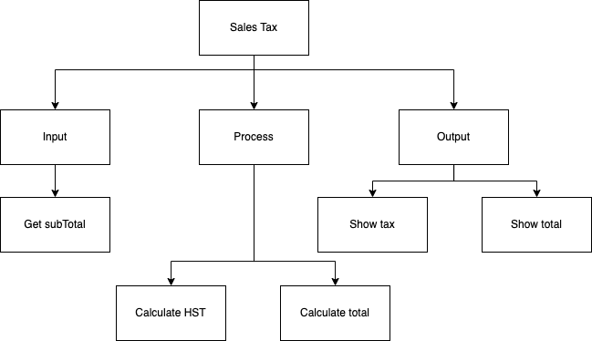
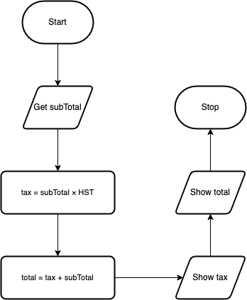
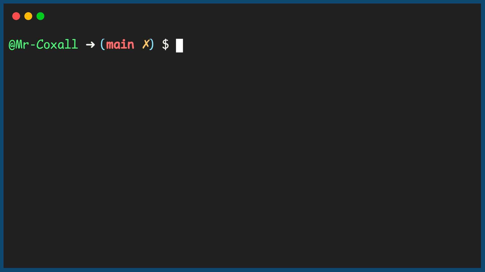

Example Sequence Problem
The following is an example problem that has been solved using the six step computer based problem solving method mentioned above. The goal is to show you how a sequential program works and also to show how the six steps are used to develop a program from a given problem.
Sequence Programming Example
Here is the problem: Write a program that will allow the user to enter a subtotal and the program will calculate the final total including tax.
Top-Down Chart
The first thing we need to find out is how to calculate tax in your particular province. If the program is to be used anywhere in Canada, it could get really confusing since each province has a different tax rate and some even calculate taxes differently than other provinces. To help simplify the problem, we are just going to do it for Ontario. The Harmonized Sale Tax (HST) in Ontario is currently 13%. The following is a top-down design breaking the problem up into smaller manageable pieces:
Flow Chart
The next step is to convert the top-down design into a flowchart. To help create the flow chart, use the bottom boxes of each of the arms, in order from left to right from the top-down design. This would mean Get subtotal, Calculate HST, Add 2 values together and Put final total. Remember that every flowchart has the “Start” oval at the top and the “Stop” oval at the bottom. This is so people know where to begin and end. The arrows are used so people can follow the flow. The words in the flow charts are not full sentences but simplified pieces of code. Ensure that you include any formulas and use the variable names that you will plan on using in your code.
Pseudo-code
Pseudo-code converts your flowchart into something that more resembles the final code you will write. Once again though it is not code (hence the name pseudo-code), so it is generically written so that it can be translated into any language. It should be understood by anyone that can write a computer program, not just people that use the same programming language that you do. The first word on each line should be a verb (an action word), since you want the computer to do something for you. By convention the first verb is also in all CAPS (capital letters). Here is the pseudo-code for the problem:
Code
Once you have the pseudo-code done, the hardest part of solving the problem should be finished. Now you just convert your pseudo-code into the specific programming language you have chosen:
1// Copyright (c) 2020 Mr. Coxall All rights reserved
2//
3// Created by: Mr. Coxall
4// Created on: Sep 2020
5// This program calculates total from subtotal and tax
6
7#include <stdio.h>
8
9int main() {
10 // this function calculates total from subtotal and tax
11 const float HST = 0.13;
12 float tax;
13 float subTotal;
14 float total;
15
16 //input
17 printf("Enter the subtotal: $");
18 scanf("%f", &subTotal);
19
20 // process
21 tax = + subTotal * HST;
22 total = subTotal + tax;
23
24 // output
25 printf("\n");
26 printf("The HST is: $%.2f.\n", tax);
27 printf("The total cost is: $%.2f.\n", total);
28
29 printf("\nDone.\n");
30 return 0;
31}
1// Copyright (c) 2020 St. Mother Teresa HS All rights reserved.
2//
3// Created by: Mr. Coxall
4// Created on: Sep 2020
5// This program calculates total from subtotal and tax
6
7#include <iostream>
8#include <iomanip>
9
10int main() {
11 // this function calculates total from subtotal and tax
12 const float HST = 0.13;
13 float tax;
14 float subTotal;
15 float total;
16
17 // input
18 std::cout << "Enter the subtotal: $";
19 std::cin >> subTotal;
20
21 // process
22 tax = + subTotal * HST;
23 total = subTotal + tax;
24
25 // output
26 std::cout << "" << std::endl;
27 std::cout << "The HST is: $"
28 << std::fixed << std::setprecision(2) << std::setfill('0')
29 << tax << "." << std::endl;
30 std::cout << "The total cost is: $"
31 << std::fixed << std::setprecision(2) << std::setfill('0')
32 << total << "." << std::endl;
33
34 std::cout << "\nDone. " << std::endl;
35}
1/* Created by: Mr. Coxall
2 * Created on: Sep 2020
3 * This program calculates total from subtotal and tax
4*/
5
6using System;
7
8/*
9 * The Program class
10 * Contains all methods for performing how local and global variables work
11*/
12class Program {
13
14 public static void Main (string[] args) {
15 // this function calculates total from subtotal and tax
16 const float HST = 0.13f;
17 float tax;
18 float subTotal;
19 float total;
20
21 //input
22 Console.Write("Enter the subtotal: $");
23 subTotal = float.Parse(Console.ReadLine());
24
25 // process
26 tax = + subTotal * HST;
27 total = subTotal + tax;
28
29 // output
30 Console.WriteLine("\n");
31 Console.WriteLine("The HST is: ${0:0.00}.", tax);
32 Console.WriteLine("The total cost is: ${0:0.00}.", total);
33
34 Console.WriteLine ("\nDone.");
35 }
36}
1/**
2 * Created by: Mr. Coxall
3 * Created on: Sep 2020
4 * This program calculates total from subtotal and tax
5 */
6
7package main
8
9import (
10 "fmt"
11)
12
13func main() {
14 // this function calculates total from subtotal and tax
15 const HST float64 = 0.13
16 var tax float64
17 var subTotal float64
18 var total float64
19
20 // get user input
21 fmt.Print("Enter the subtotal: $")
22 fmt.Scanln(&subTotal)
23
24 // process input
25 tax = subTotal * HST
26 total = subTotal + tax
27
28 // output results
29 fmt.Println()
30 fmt.Printf("The HST is: $%.2f.\n", tax)
31 fmt.Printf("The total cost is: $%.2f.\n", total)
32
33 fmt.Println("\nDone.")
34}
1/*
2 * This program shows how local and global variables work
3 *
4 * @author Mr Coxall
5 * @version 1.0
6 * @since 2020-09-01
7 */
8
9import java.util.Scanner; // Import the Scanner class
10
11final class Main {
12 private Main() {
13 // Prevent instantiation
14 // Optional: throw an exception e.g. AssertionError
15 // if this ever *is* called
16 throw new IllegalStateException("Cannot be instantiated");
17 }
18
19 /**
20 * Main entry point into program.
21 *
22 * @param args nothing passed in
23 */
24 public static void main(final String[] args) {
25 // this function calculates total from subtotal and tax
26 final float HST = 0.13f;
27 float tax;
28 float subTotal;
29 float total;
30
31 Scanner scanner = new Scanner(System.in);
32
33 // input
34 System.out.print("Enter the subtotal: $");
35 subTotal = scanner.nextFloat();
36
37 // process
38 tax = subTotal * HST;
39 total = subTotal + tax;
40
41 // output
42 System.out.println();
43 System.out.printf("The HST is: $%.2f.\n", tax);
44 System.out.printf("The total cost is: $%.2f.\n", total);
45
46 System.out.println("\nDone.");
47 }
48}
1// Copyright (c) 2020 Mr. Coxall All rights reserved
2//
3// Created by: Mr. Coxall
4// Created on: Sep 2020
5// This program calculates total from subtotal and tax
6
7const prompt = require('prompt-sync')()
8
9// this function calculates total from subtotal and tax
10const HST = 0.13
11let tax
12let subTotal
13let total
14
15// get user input
16subTotal = parseFloat(prompt("Enter the subtotal: $"))
17
18// process input
19tax = subTotal * HST
20total = subTotal + tax
21
22// output results
23console.log()
24console.log(`The HST is: $${tax.toFixed(2)}.`)
25console.log(`The total cost is: $${total.toFixed(2)}.`)
26
27console.log("\nDone.")
constants.py
1#!/usr/bin/env python3
2"""
3Created by: Mr. Coxall
4Created on: Sept 2020
5This module contains constants for the tax program
6"""
7
8HST = 0.13
main.py
1#!/usr/bin/env python3
2"""
3Created by: Mr. Coxall
4Created on: Sep 2020
5This module calculates total from subtotal and tax
6"""
7
8import constants
9
10
11def main() -> None:
12 """The main() function calculates total and tax, returns None."""
13
14 # input
15 sub_total = float(input("Enter the subtotal: $"))
16
17 # process
18 tax = sub_total * constants.HST
19 total = sub_total + tax
20
21 # output
22 print("")
23 print(f"The HST is ${tax:,.2f}.")
24 print(f"The total cost is ${total:,.2f}.")
25
26 print("\nDone.")
27
28
29if __name__ == "__main__":
30 main()
Example Output
Debug
It is hard to show the debugging step, since I ensured that the program above worked correctly before I pasted it into the page. When programmers write code it is extremely unlikely that it will work right away the first time. This is why the development environment has tools to help the programmer fix simple mistakes. The two main kinds of mistakes are syntax errors and logical errors.
In modern languages high level languages and IDEs, syntax errors are usually easy to see and fix. A syntax error is a piece of code that the compiler or interpreter does not understand. It would be like speaking to you and one of the sentences did not make any sense to you. A modern IDE will nicely place a squiggly line under the code (or some other way of showing you) it does not understand, so that you can fix the problem. A logical error is a lot harder to find. This is a problem with the way you solved the problem. The code will still compile or be interpreted and run but the program will give you the wrong answer (or maybe just the wrong answer some times!). There is no easy way to solve these problems other than to step though your code one line at a time.
Document the code
This is hopefully not done just at the end of your programming but as you write your code. All the same it is good practice to go over you code at the end to ensure that someone else looking at it will understand what is going on. In the above example you can see that there is a comment at the start of the program and in the function as well. Also I have used a naming convention that is hopefully easy to understand what the variables are holding. In addition, the value of the HST is places in a constants, since they only change very infrequently.
The above six steps are an example of how you should go about solving a computer based problem. Ensure when you are given a problem, you do not make the mistake that most people do and go directly to the computer and start coding. If you have not first been able to break the problem down into smaller pieces and solve the problem on paper, going to the computer and starting to code will not help you. You will just end up going in circles, wasting time, creating bad code and getting nowhere. Programming is just problem solving on a computer but you have to have solved the problem before you actually get to the computer to help you get the answer.